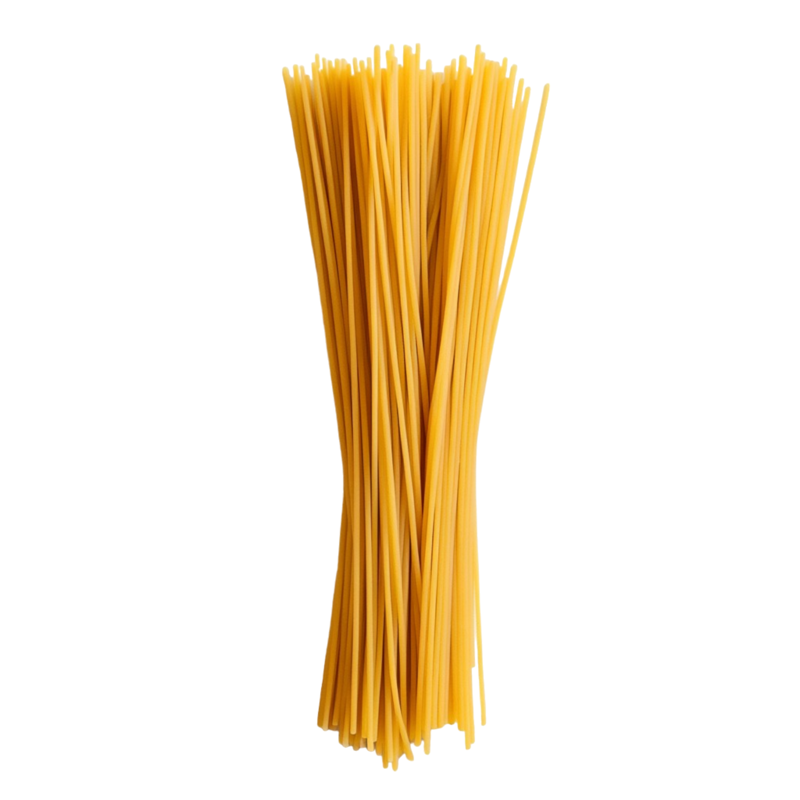

Featured Ingredients :
 500g Ground Beef
500g Ground Beef
 400g Tomato Sauce
400g Tomato Sauce
 1 tsp Italian Herbs
1 tsp Italian Herbs
 1 Onion
1 Onion
 2 Cloves of Garlic
2 Cloves of Garlic

400g Spaghetti Olive Oil
Olive Oil
 Salt and pepper
Salt and pepper
 Emmental
Emmental
How to Make Bolognese :
→ Follow these simple steps to cook a delicious bolognese:
- In a large pan, heat some olive oil over medium heat. Add the diced onion and minced garlic, and sauté until they become translucent and fragrant.
- Add the ground beef to the pan and cook until it is browned and cooked through. Break up any clumps of meat with a spoon as it cooks.
- Once the beef is cooked, add the pancetta to the pan and cook for an additional 2-3 minutes until it becomes crispy.
- Pour in the tomato sauce and sprinkle in the Italian herbs. Stir everything together and let it simmer for about 20-30 minutes, allowing the flavors to meld together.
- While the sauce is simmering, cook the spaghetti according to the package instructions until al dente. Drain the pasta and set it aside.
- Once the sauce has thickened and developed rich flavors, serve it over the cooked spaghetti. Garnish with freshly grated emmental cheese if desired, and enjoy your delicious spaghetti alla bolognese!